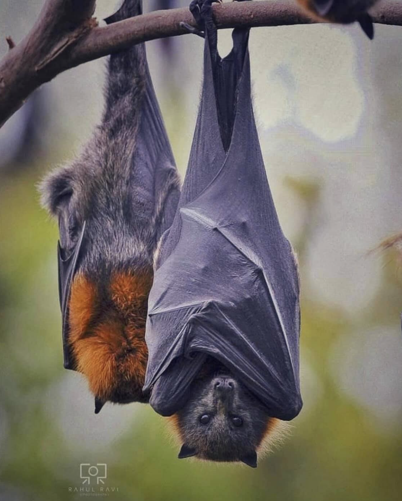

Rudawka (Pteropus) – rodzaj ssaka z podrodziny Pteropodinae w obrębie rodziny rudawkowatych (Pteropodidae). Nazywane są również kalongami lub lisami latającymi. Wiele gatunków jest zagrożonych wyginięciem, ze względu na wysoki poziom polowań w celach konsumpcyjnych, bądź medycznych. Zwierzęta są także zabijane dla sportu.
Rodzaj obejmuje gatunki występujące w strefie tropikalnej i subtropikalnej Australii, Afryki, Azji i Oceanii.
Długość ciała 92–370 mm, długość ucha 9–42 mm, długość tylnej stopy 26–78 mm, długość przedramienia 80–230 mm; masa ciała 92–1500 g. Gatunki zaliczane do tego rodzaju są największymi nietoperzami na świecie. Rozpiętość ich skrzydeł sięga do 1,7 m (P. medius). Żywią się kwiatami, nektarem i owocami. Odpoczywają w dużych stadach uwieszone na gałęziach, z głową skierowaną w dół.